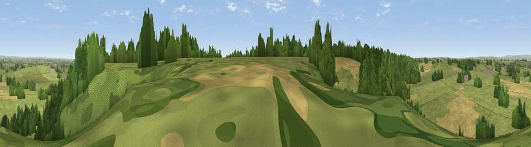

Viewpoint near Marchington Woodlands
#22657 in England · top 25% of its area beats it · near Marchington WoodlandsWhere it is
The exact computed spot (SK 10725 28275). Click the marker for map links.
The view, rendered

A 360° render of this exact spot computed from the terrain model, tree cover and land cover — summer colours, afternoon light, calibrated against photographs of famous viewpoints. Real trees, hedges and buildings will differ in detail.
The panorama
Grey silhouette: terrain skyline in each direction (720 bearings, Earth curvature and refraction included). Dashed green: skyline with trees (+15 m) and buildings (+8 m) as obstacles. Blue strip: how far the ground is visible on each bearing.
Where the view opens
Wedge length = distance to the farthest visible ground on that bearing (vegetation-aware). Rings at 10, 25 and 50 km.
What fills the view
48% grassland · 40% woodland · 11% cropland
Angular shares of the visible panorama (visual magnitude), not map area. Landscape diversity 0.43 (0–1 Shannon).
Key numbers
More beautiful places nearby
The staircase of upgrades: each row has a higher view potential than everything closer. Driving times are estimates from straight-line distance, calibrated against real road routing — check an actual route before setting out.
| Place | Direction | Drive | Score |
|---|---|---|---|
| Viewpoint near Marchington | ENE · 3 km | ~7 min | 52.0 |
| Viewpoint near Hanbury | E · 6 km | ~13 min | 54.7 |
| Viewpoint near Hollington | NNW · 12 km | ~22 min | 57.2 |
| Viewpoint near Cheadle | NNW · 16 km | ~28 min | 61.0 |
| Viewpoint near Oakamoor | NNW · 17 km | ~30 min | 62.9 |
| Viewpoint near Wootton | N · 18 km | ~31 min | 66.1 |
| Viewpoint near Wootton | N · 18 km | ~31 min | 74.4 |
| Viewpoint near Wootton | N · 18 km | ~31 min | 74.8 |
52.85187, -1.84218 · source: screening · position refined by local search. Computed location — check access rights before visiting.